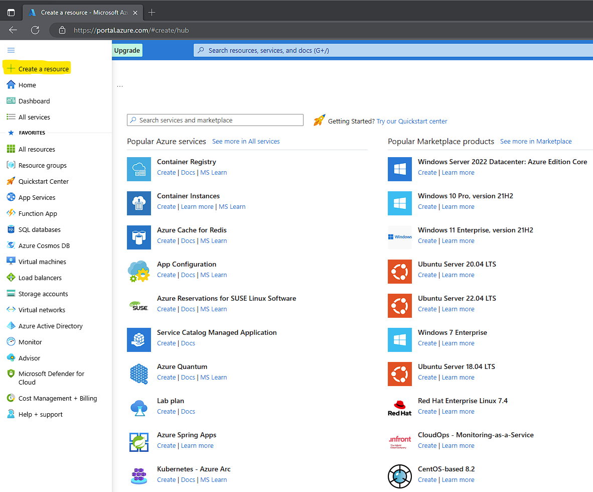

Microsoft Azure and Active Directory
AZ-104 Microsoft Azure Administrator
There's a'lot more to Cyber Security than meets the eye.
I can't know everything but I can continue to learn to know enough.
AZ-104 Microsoft Azure Administrator
There's a'lot more to Cyber Security than meets the eye.
I can't know everything but I can continue to learn to know enough.

Task 1: Create and configure Azure AD users
Task 2: Create Azure AD groups with assigned and dynamic membership
Task 3: Create an Azure Active Directory (AD) tenant (Optional - lab environment issue)
Task 4: Manage Azure AD guest users (Optional - lab environment issue)

Task 1: Implement Management Groups
Task 2: Create custom RBAC roles
Task 3: Assign RBAC roles
Task 1: Create and assign tags via the Azure portal
Task 2: Enforce tagging via an Azure policy
Task 3: Apply tagging via an Azure policy
Task 1: Create resource groups and deploy resources to resource groups
Task 2: Move resources between resource groups
Task 3: Implement and test resource locks
Task 1: Review an ARM template for deployment of an Azure managed disk
Task 2: Create an Azure managed disk by using an ARM template
Task 3: Review the ARM template-based deployment of the managed disk
Let's deploy virtual machines of Windows Server 2019 and Linux Unbuntu
We will then log into both using their suggested methods. RDP (Windows) and (SSH) Linux.
1. Create a resource
2. Click on "Getting Started? Try our Quick Start center"
3. Deploy a virtual machine
4. Create a Windows virtual machine and click on "Learn more", then "Create".
5. Follow what I have highlighted, change the data you want to customize.
6. Again, follow what I have but also make sure the "Allow selected ports" has "RDP (3389)" selected. Click "Next"
7. Nothing to change for "Disks" and nothing to change for "Networking". Click "Review + create"
8. Summary Page. You should see a message saying "Validation passed". Click "Create"
8. Deployment is in progress
9. Deployment complete. Click "Go to resource"
10. Details page for virtual machine. Make sure your status is "Running" and then click "Connect"
11. As a reminder, we are again going with RDP 3389 (Windows suggested). Click "Download RDP File"

12. Once downloaded, open file
13. Time for remote desktop!!!
Note. When entering your username name it should be like this:
AzureDeploy01\AzureDeployAdmin
Virtual machine name\Admin account username
14. Success. We just used remote desktop to access our virtual Windows Server 2019 machine deployed by Microsoft Azure.
Linux is up next
Raleigh, North Carolina, 27616
{kind=link}
{kind=link}
{kind=link}
{kind=link}
{kind=link}
{kind=link}
{kind=link}
{kind=link}
{kind=link}
{kind=link}
{kind=link}
{kind=link}
{kind=link}